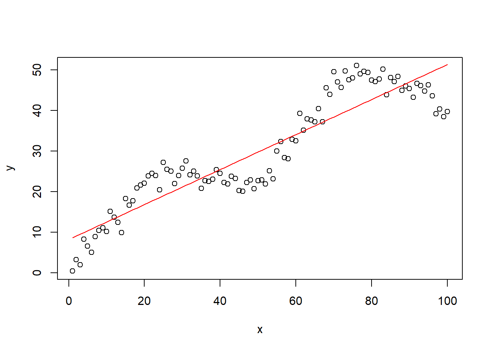
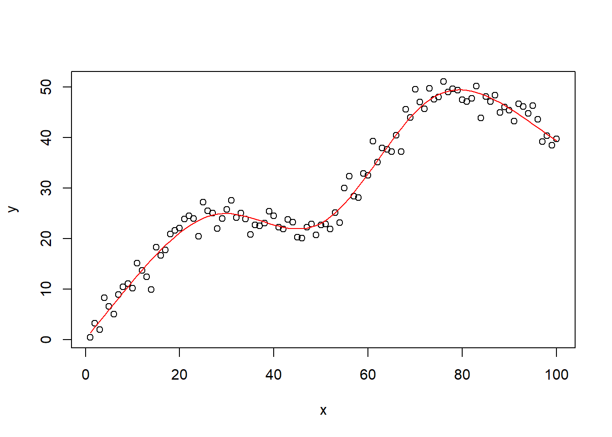
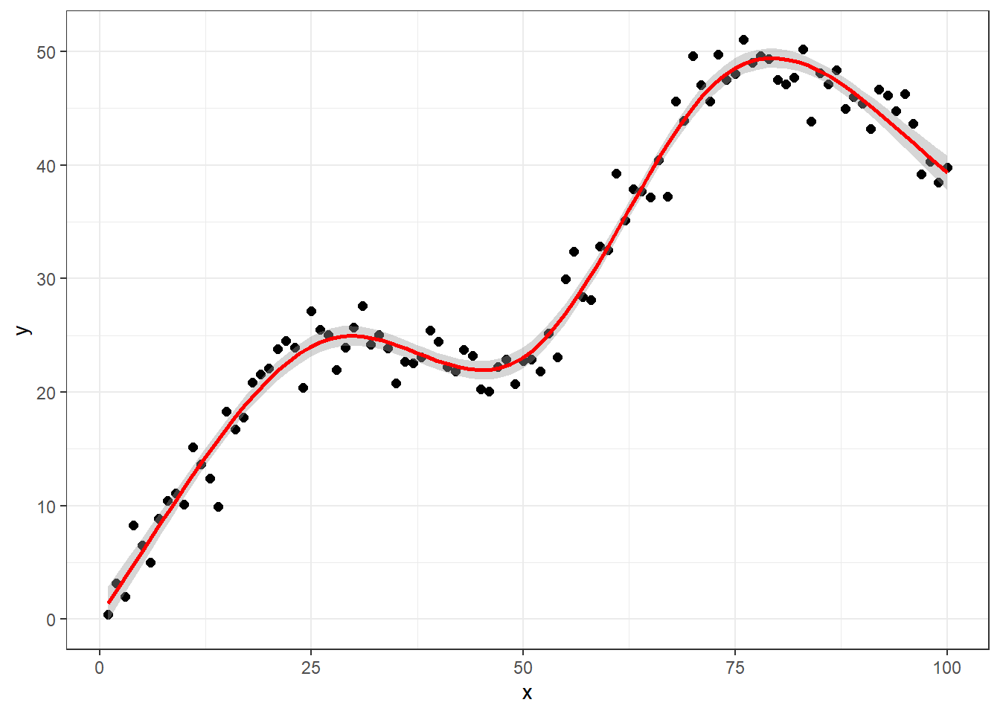
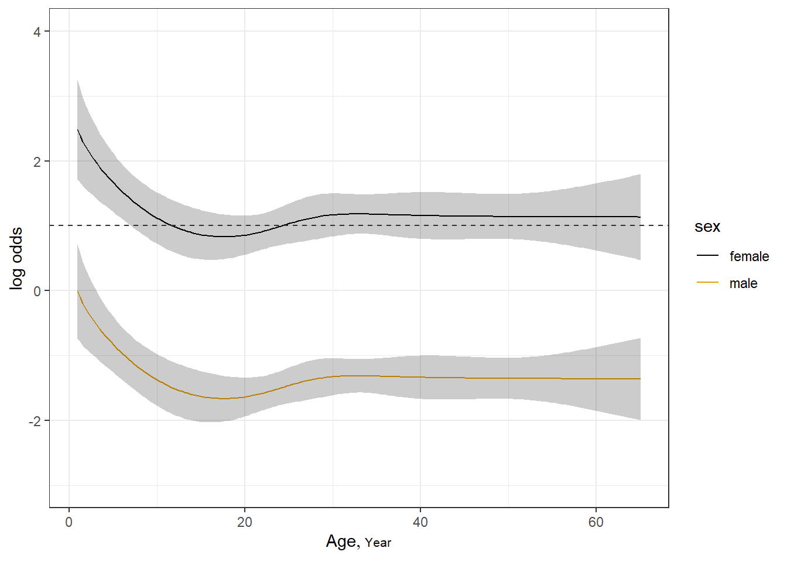
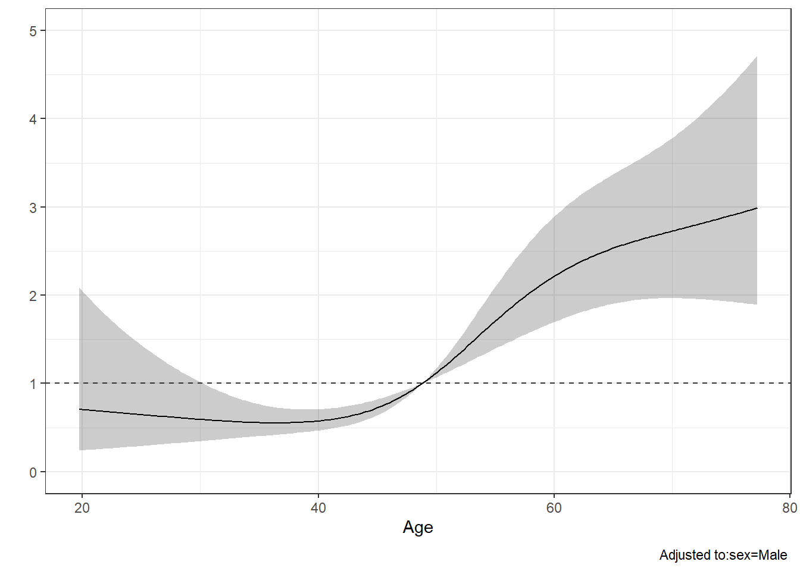
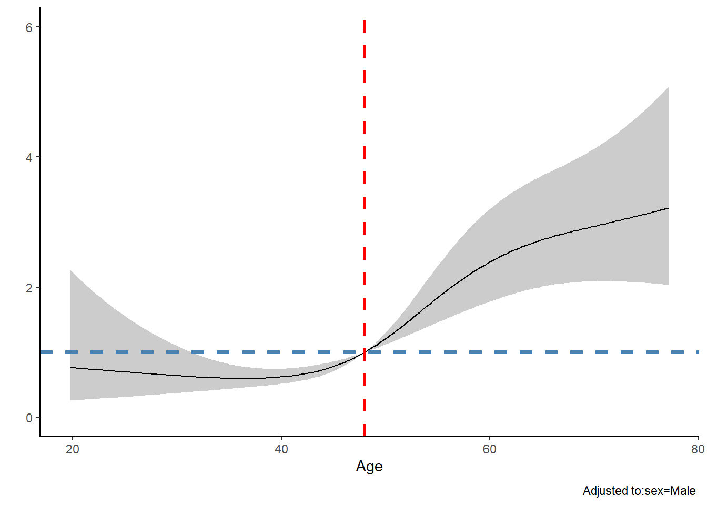

rm(list = ls())
x <- 1:100
k <- c(25, 50, 75)
u <- function(x)ifelse(x > 0, x, 0)
x2 <- u(x - k[1])
x3 <- u(x - k[2])
x4 <- u(x - k[3])
set.seed(1)
y <- 0.8 + 1*x + -1.2*x2 + 1.4*x3 + -1.6*x4 + rnorm(100,sd = 2.2)
plot(x, y)
前面用了2篇推文，帮大家梳理了从线性拟合到非线性拟合的常用方法，包括多项式回归、分段回归、样条回归、限制性立方样条回归，以及它们之间的区别和联系，详情请看：
并且上一篇推文已经介绍了R语言实现多项式回归的内容：R语言非线性拟合：多项式回归
今天主要介绍R语言实现立方样条回归。
读过上面几篇推文的朋友想必已经知道了（没看过的建议先看看），样条回归包括很多种，限制性立方样条只是其中一种，更多的大家可以自己了解。
演示所用数据还是用上一篇的数据：
rm(list = ls())
x <- 1:100
k <- c(25, 50, 75)
u <- function(x)ifelse(x > 0, x, 0)
x2 <- u(x - k[1])
x3 <- u(x - k[2])
x4 <- u(x - k[3])
set.seed(1)
y <- 0.8 + 1*x + -1.2*x2 + 1.4*x3 + -1.6*x4 + rnorm(100,sd = 2.2)
plot(x, y)
假设我们有这样一个数据，很明显这不是一个直线的关系，这时候再用直线回归就不适合了。但是为了演示，这里还是给大家用直线回归方法拟合一下看看效果。
f <- lm(y ~ x)
plot(x, y)
lines(x, fitted(f),col="red")
很明显，直线回归是不可能有很好的拟合效果的。这时候我们应该用什么方法拟合这个关系呢？
根据之前的3篇推文，拟合非线性关系有非常多的方法，至少有3种：
多项式回归在上一篇推文中已经介绍过了，效果不错，但是有一个小小的缺点，在数据两端有上翘趋势，具体可参考之前的推文。
今天给大家演示限制性立方样条回归。做限制性立方样条回归的R包很多，这里以rms为例，以后有机会再介绍其他R包，比如splines。
rms做限制性立方样条回归很简单，对需要使用的变量使用rcs()函数即可。
# 加载R包
library(rms)
library(ggplot2)
# 拟合限制性立方样条，这里对变量x使用，跟多项式回归差不多
f <- lm(y ~ rcs(x,5))
# 画出原数据
plot(x,y)
lines(x, fitted(f),col="red") # 画出拟合线
可以看到，拟合结果非常完美，甚至比我们的6次多项式拟合还要好一点！
下面解释下上述代码中的意思。rcs是我们的立方样条函数，其中的数字5表示我们要用5个节点（不理解这里的节点啥意思的请去看开头的两篇推文）。
默认节点是4，一般建议选3-6个左右，可以分别试试效果，选择拟合较好的那一个，参考文献是这篇：F. Harrell. Regression Modeling Strategies: With Applications to Linear Models, Logistic and Ordinal Regression, and Survival Analysis.
我们可以自己指定，比如根据分位数、中位数、平均数等，都可以作为我们的节点。
下面用ggplot2画图。
df.tmp <- data.frame(x=x,y=y)
ggplot(df.tmp, aes(x,y))+
geom_point(size=2)+
geom_smooth(method = "lm",
formula = y ~ rcs(x,5),
se = T,
color="red"
)+
theme_bw()
此方法同样也是适用于logistic回归和cox回归的，建议使用rms包中的lrm函数和cph进行拟合。
逻辑回归和cox回归就不展开讲了，用法一模一样。
library(rms)
# 逻辑回归数据
#getHdata(titanic3) # 在线下载titanic3数据，为了重复使用我已经下载下来了
load(file = "datasets/titanic3.rdata")
# 使用rms前先把数据打包
dd <- datadist(titanic3); options(datadist='dd')
# 逻辑回归的立方样条
f <- lrm(survived ~ rcs(sqrt(age),5) + sex, data=titanic3)
f
## Frequencies of Missing Values Due to Each Variable
## survived age sex
## 0 263 0
##
## Logistic Regression Model
##
## lrm(formula = survived ~ rcs(sqrt(age), 5) + sex, data = titanic3)
##
##
## Model Likelihood Discrimination Rank Discrim.
## Ratio Test Indexes Indexes
## Obs 1046 LR chi2 328.06 R2 0.363 C 0.794
## 0 619 d.f. 5 R2(5,1046)0.266 Dxy 0.588
## 1 427 Pr(> chi2) <0.0001 R2(5,758.1)0.347 gamma 0.592
## max |deriv| 2e-07 Brier 0.168 tau-a 0.284
##
## Coef S.E. Wald Z Pr(>|Z|)
## Intercept 3.0936 0.5428 5.70 <0.0001
## age -0.6383 0.1771 -3.60 0.0003
## age' 1.5544 0.6527 2.38 0.0172
## age'' -12.1583 8.8925 -1.37 0.1715
## age''' 15.8326 16.9397 0.93 0.3500
## sex=male -2.4944 0.1549 -16.10 <0.0001构建好逻辑回归模型后，首先可以用anova()函数查看各自变量的统计显著性：
anova(f)
## Wald Statistics Response: survived
##
## Factor Chi-Square d.f. P
## age 14.97 4 0.0048
## Nonlinear 12.65 3 0.0055
## sex 259.17 1 <.0001
## TOTAL 265.88 5 <.0001age的Nonlinear的P<0.05，可以认为是符合非线性的。（如果是符合线性，那我们可以直接用普通线性回归的方法，就不用这么折腾还要用样条回归了）
下面我们用图形展示年龄和OR值的关系：
ggplot(Predict(f, age, sex))+ # 加上 fun = plogis 则返回概率
geom_hline(yintercept = 1, color="grey20",linetype=2)+ # OR=1的横线
theme_bw() 
纵坐标表示OR值，横坐标是年龄。
rm(list = ls())
# 构造数据，包括性别(sex),年龄(age),生存时间(time),生存结局(death)
n <- 1000
set.seed(731)
age <- 50 + 12*rnorm(n)
label(age) <- "Age"
sex <- factor(sample(c('Male','Female'), n, rep=TRUE, prob=c(.6, .4)))
cens <- 15*runif(n)
h <- .02*exp(.04*(age-50)+.8*(sex=='Female'))
time<- -log(runif(n))/h
label(time) <- 'Follow-up Time'
death<- ifelse(time <= cens,1,0)
time <- pmin(time, cens)
units(time) <- "Year"
data<-data.frame(age,sex,time,death)
psych::headTail(data)
## age sex time death
## 1 60.58 Male 3.09 1
## 2 42.11 Male 1.57 0
## 3 54.87 Male 3.24 0
## 4 55.82 Male 12.5 0
## ... ... <NA> ... ...
## 997 53.02 Female 9.03 0
## 998 38.25 Male 11.72 0
## 999 45.63 Male 12.8 0
## 1000 57.38 Female 3.4 0使用限制性立方样条进行Cox回归：
# 打包数据
dd <- datadist(data);options(datadist='dd')
# 拟合cox模型
fit<- cph(Surv(time,death) ~ rcs(age,4) + sex,data = data)
fit
## Cox Proportional Hazards Model
##
## cph(formula = Surv(time, death) ~ rcs(age, 4) + sex, data = data)
##
## Model Tests Discrimination
## Indexes
## Obs 1000 LR chi2 78.28 R2 0.083
## Events 183 d.f. 4 R2(4,1000)0.072
## Center -0.2861 Pr(> chi2) 0.0000 R2(4,183)0.334
## Score chi2 83.86 Dxy 0.378
## Pr(> chi2) 0.0000
##
## Coef S.E. Wald Z Pr(>|Z|)
## age -0.0173 0.0286 -0.61 0.5443
## age' 0.2040 0.0767 2.66 0.0079
## age'' -0.7500 0.2679 -2.80 0.0051
## sex=Male -0.6445 0.1488 -4.33 <0.0001有了这个结果，我们就可以像logistic回归一样，把结果画出来，用来展示年龄和HR值的关系：
ggplot(Predict(fit, age,fun = exp, ref.zero = T))+ # fun = exp，计算HR值，不加这句计算概率
geom_hline(yintercept = 1, color="grey20",linetype=2)+ # HR=1的横线
theme_bw()
通常在文献中还会看到一些竖线，来表示一些比较重要的分割点，比如根据某些值把HR分为大于1和小于1，这样就可以区分在哪一个范围内是保护因素或者风险因素。
我们这个例子，首先可以通过以下函数获取HR=1时的年龄是几岁：
# 结果太长，没放出来
Predict(fit, age,fun = exp, ref.zero = T)97 47.44907 Male 0.8836735 0.8413758 0.9280976
98 47.73791 Male 0.9068446 0.8722672 0.9427927
99 48.02676 Male 0.9309398 0.9047742 0.9578620
100 48.31561 Male 0.9559535 0.9389208 0.9732953
101 48.60445 Male 0.9818776 0.9747260 0.9890816
102 48.89330 Male 1.0087001 1.0052093 1.0122030
103 49.18214 Male 1.0364058 1.0216664 1.0513578
104 49.47099 Male 1.0649750 1.0384398 1.0921883
105 49.75984 Male 1.0943840 1.0555157 1.1346835可以看到在第101,102行左右，HR值从0.9变成了1.0，此时对应的年龄大概是48岁，所以我们可以在年龄为48的位置增加一条竖线，以此来区分HR。
dd$limits$age[2] <- 48 # 重新选择HR为1的点
fit <- update(fit) # 更新模型
# 重新画图
ggplot(Predict(fit, age,fun = exp, ref.zero = T))+
geom_hline(yintercept = 1, color="steelblue",linetype=2,size=1.2)+ # HR=1的横线
geom_vline(xintercept = 48, color="red",linetype=2,size=1.2)+
theme_classic()
## Warning: Using `size` aesthetic for lines was deprecated in ggplot2 3.4.0.
## ℹ Please use `linewidth` instead.
除此之外，你也可以用返回的数据自己用ggplot2画。
以上就是限制性立方样条回归的演示。
聂博士的10+篇高质量RCS合集：RCS系列合集